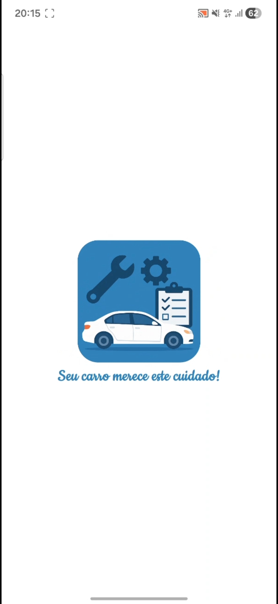
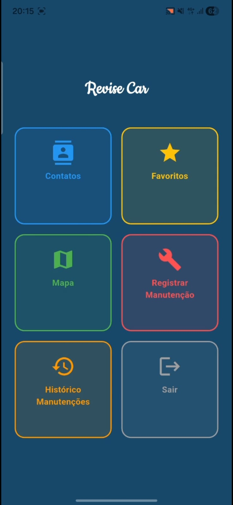

Revise Car
Portfólio de Desenvolvimento Mobile (Flutter)
Sobre o projeto
Aplicativo de gestão de manutenção automotiva desenvolvido para centralizar o histórico de serviços do veículo, organizar despesas e facilitar o contato com oficinas e lojas de autopeças.
O sistema ajuda motoristas a manterem todas as informações de manutenção em um só lugar, com suporte a mapas, favoritos e registros financeiros.
Funcionalidades principais:
- Login e cadastro seguro para proteger dados pessoais e histórico do veículo
- Dashboard colorido e intuitivo com categorias para contatos, favoritos, mapa, registro e histórico
- CRUD de contatos para cadastrar e gerenciar prestadores de serviços, oficinas e autopeças
- Favoritos para acesso rápido aos fornecedores preferidos
- Mapa com marcadores personalizados e geolocalização para localizar oficinas e lojas
- Registro de custos, descrição de serviços e data do atendimento em um feed cronológico
Fotos do projeto
Coloque aqui prints da interface do aplicativo e das telas de manutenção.



Tecnologias usadas
Impacto
O Revise Car resolve a dificuldade de manter um histórico organizado de serviços e peças trocadas, ajudando o usuário a acompanhar a manutenção preventiva e controlar melhor o orçamento do veículo.
Desenvolvido por Emanoel Sousa do Carmo